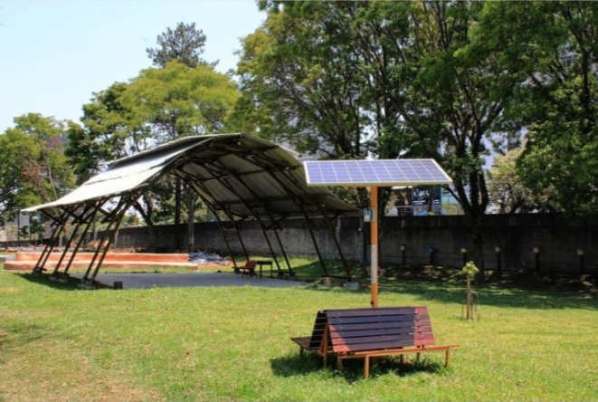

CULTIVANDO SABERES
O projeto “Cultivando saberes: educação socioambiental para escolas sustentáveis” desenvolve uma série de ações relacionadas à questão da sustentabilidade socioambiental no Colégio Estadual Leôncio Correia, uma escola pública localizada no município de Curitiba (PR)-Brasil, a fim de promover a transformação da escola em um espaço educador sustentável. Vencedor nacional no desafio Escolas Sustentáveis, promovido pela ONU e organizado pelo Instituto Akatu, que visa promover a temática da sustentabilidade na Educação Básica, a escola recebeu um financiamento de R$ 105 mil para desenvolver as ações previstas no plano de ação, cuja primeira etapa foi executada em 2020.
Abelhas

No projeto, Gabriel introduziu abelhas, trazendo melhor deenvoltura dos alunos com a natureza.Melipona marginata é uma espécie que temos no cultivamos saberes, de abelha social da tribo Meliponini. As abelhas desse grupo são conhecidas pelo comportamento social e pelo ferrão atrofiado. São popularmente conhecidas como abelhas sem ferrão e estão amplamente distribuídas pelos trópicos e subtrópicos. Melipona marginata é considerada uma das espécies do gênero Melipona mais sensíveis aos processos de degradação e fragmentação dos hábitats, sendo considerada “exigente em relação ao tamanho e/ou qualidade desses fragmentos, não ocorrendo a não ser nos maiores, mais antigos e menos perturbados.
Premiações do projeto
O projeto começou a ser executado em 2020 no primeiro ano da pandemia, inicialmente sem os alunos, porém com a ampliação deste foram necessários alguns serviços contratados pela instituição e a parceria de professores interessados. Assim, “Cultivando Saberes: educação socioambiental para escolas sustentáveis” venceu o Prêmio Nacional do Desafio Escolas Sustentáveis, promovido pela ONU, e recebeu um total de R$120 mil, sendo R$105 mil no mesmo ano e R$15 mil em 2021, para desenvolver as ações propostas. Atualmente o projeto concorre ao prêmio Escolas Sustentáveis, uma iniciativa da Santillana, Organização De Estado Ibero-Americanos para a Educação, a Ciência e a Cultura, com o objetivo de reconhecer e valorizar as escolas comprometidas com a sustentabilidade. Este é só o começo a fim de promover a transformação da escola em um espaço educador sustentável.
Entrevista sobre o projeto
Em que ano que surgiu a ideia do projeto? " Projeto surgiu final de 2019, quando eu era professor eh supervisor do PIBID, que é o programa de iniciação a docência da UFPR e na época a gente tinha aqui alguns alunos e estagiários, alunos que a gente tava inconformado com algumas questões dentro da escola, questões socioambientais e daí a gente resolveu escrever um plano de ação e daí ganhamos o prêmio, né? Do Desafio Escola Sustentáveis."Da onde surgiu a ideia do projeto cultivando saberes e o que te motivou? "Então, o que me motivou era a má gestão dos lixos da escola, né? A escola mandava o lixo tudo junto pro mesmo lugar, não tinha nenhuma separação e a má ocupação desse espaço aqui, né? Que era um espaço que tinha muito entulho, tinha muito mato e daí a gente resolveu dá um, né? Um outro uso, tínhamos ideias, né? Fizemos esse plano de ação e daí a gente resolveu fazer eh implantar esse plano de ação, né? Eh com quando a gente ganhou o prêmio." Conta um pouco mais pra gente sobre o prêmio que você já ganhou anteriormente? "O prêmio era o desafio escola sustentáveis da ONU e promovido em nove países do Sul do mundo, o Brasil era um deles e daí a gente escreveu esse plano de ação e ganhou o destaque nacional,Então a gente ganhou o prêmio maior de cem, cento e cinco mil reais e depois nos dois isso foi dois mil e vinte. E dois mil e vinte e um a gente ganhou mais quinze mil. Então totalizou cento e vinte mil."Qual foi o maior desafio que você já enfrentou com o projeto? " É olha tem vários desafios né? Uma é a participação da é uma participação maior da comunidade especialmente do corpo docente eh o desafio de da gente conseguir apoio, né? Apoio institucional, apoio financeiro, recursos humanos pra desenvolvimento do projeto. E acho que são esses dois."Como foi a experiência de ir a Brasília concorrer entre os dez melhores projetos de escolas sustentáveis? " Foi uma experiência muito boa, muito gratificante, sinal de que a gente tá fazendo um trabalho, né? Que eu acho que tá no caminho certo, pela segunda vez a gente tem, né? Um uma premiação concorre, né? Tá entre as melhores escolas do Brasil, a primeira era só enquanto ideia, agora a segunda já, enquanto essa ideia é realizada, né? Então, foi algo muito bom, tanto pelo reconhecimento quanto pelas trocas que a gente teve lá na, né? no evento com as outras escolas, né? Do Brasil que a gente trocou, né? Experiências, ideias, dicas pra gente caminhar junto, né? Nesse processo de construir uma escola em uma sociedade mais sustentável"
Olá, visitante! Seja bem vindo